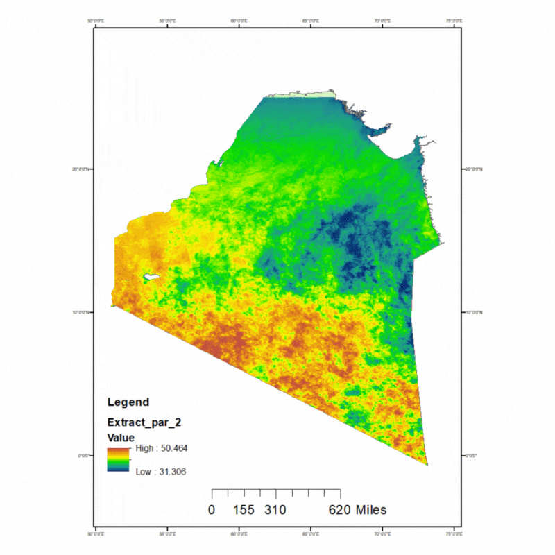

Projects
Map Construction Using Satellite Data
Lab Course | 2023

- Collected satellite datasets from MODIS, Landsat &Sentinel-2
- Processed and prepared the dataset by refining, resampling and making subsets
- Analysed the data to classify Vegetation, Sea Surface Temperature (SST), Cholorophil Concentration, etc.
- Utilized satellite imagery and data frames to visualize a detailed maps
Sediment Analysis
Lab Course | 2022

- Measured total nitrogen content in sediments to assess nutrient levels using Kjeldahl Method
- Conducted hydrometer analysis to determine soil texture
- Applied the Walkley-Black method to determine organic carbon content in sediments
- Used a series of sieves to classify particle size distribution in sediments